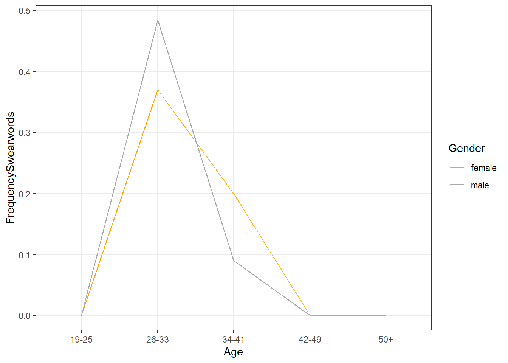

Corpus Linguistics with R: Swearing in Irish English
Martin Schweinberger
2020-09-29

Introduction
This section presents different case studies or use cases that highlight how the the content shown in the tutorials can be put into practice. The case studies thus merely exemplify ways in which R can be used in language-based research rather than providing models of how to do research. The R markdown document of this case study can be downloaded here.
Preparation and session set up
This case study is based on R. If you have not installed R or are new to it, you will find an introduction to and more information how to use R here. For this case study, we need to install certain packages from an R library so that the scripts shown below are executed without errors. Before turning to the code below, please install the packages by running the code below this paragraph. If you have already installed the packages mentioned below, then you can skip ahead ignore this section. To install the necessary packages, simply run the following code - it may take some time (between 1 and 5 minutes to install all of the libraries so you do not need to worry if it takes some time).
# clean current workspace
rm(list=ls(all=T))
# set options
options(stringsAsFactors = F) # no automatic data transformation
options("scipen" = 100, "digits" = 4) # supress math annotation
# manual installation
install.packages("devtools")
# load devtools and install development version of data.table
library(devtools)
install_github("Rdatatable/data.table", build_vignettes = FALSE)Once you have installed R-Studio and initiated the session by executing the code shown above, you are good to go.
Getting started
This case study aims to answer if swearing differs across age groups and genders, i.e. whether old or young or men or women swear more, in a small subsample of the Irish component of the International Corpus of English (ICE) using R. The case study represents a simplified version of the analysis of paper (Schweinberger 2018).
In a first step, we load the load the data into R. The way that the corpus data is loaded in this example is somewhat awkward because the data is in a server directory rather than on a hard drive on a simple PC. If the corpus data is not stored in a directory of a server, then you should not use the code shown immediately below but code in the window following the code immediately below.
# define path to corpus
corpuspath <- "https://slcladal.github.io/data/ICEIrelandSample/"
# define corpusfiles
files <- paste(corpuspath, "S1A-00", 1:20, ".txt", sep = "")
files <- gsub("[0-9]([0-9][0-9][0-9])", "\\1", files)
# load corpus files
corpus <- sapply(files, function(x){
x <- readLines(x)
x <- paste(x, collapse = " ")
x <- tolower(x)
})
# inspect corpus
str(corpus)## Named chr [1:20] "<s1a-001 riding> <i> <s1a-001$a> <#> well how did the riding go tonight <s1a-001$b> <#> it was good so it was "| __truncated__ ...
## - attr(*, "names")= chr [1:20] "https://slcladal.github.io/data/ICEIrelandSample/S1A-001.txt" "https://slcladal.github.io/data/ICEIrelandSample/S1A-002.txt" "https://slcladal.github.io/data/ICEIrelandSample/S1A-003.txt" "https://slcladal.github.io/data/ICEIrelandSample/S1A-004.txt" ...If the corpus data is stored on your own computer (on not on a serves as is the case in the present example), you should use the following code (you need to adapt the path though as the code below only works on my computer):
# define path to corpus
# WARNING: you need to include your own path!
corpuspath <- "D:\\Uni\\UQ\\LADAL\\SLCLADAL.github.io\\data\\ICEIrelandSample"
# define corpusfiles
files <- list.paste(corpuspath, all.names = T)
# load corpus files
corpus <- sapply(files, function(x){
x <- scan(x, what = "char", sep = "", quote = "", skipNul = T)
x <- paste(x, sep = " ", collapse = " ")
x <- tolower(x)
})
# inspect corpus
str(corpus)Now that the corpus data is loaded, we can prepare the searches by defining the search patterns. We will use regular expressions to retrieve all variants of the swear words. The sequence \\b denotes word boundaries while the sequence [a-z]{0,3} means that the sequences ass can be followed by a string consisting of any character symbol that is maximally three characters long (so that the search would also retrieve asses). We separate the search patters by | as this means or.
searchpatterns <- c("\\bass[ingedholes]{0,6}\\b|\\bbitch[a-z]{0,3}\\b|\\b[a-z]{0,}fuck[a-z]{0,3}\\b|\\bshit[a-z]{0,3}\\b|\\bcock[a-z]{0,3}\\b|\\bwanker[a-z]{0,3}\\b|\\bboll[io]{1,1}[a-z]{0,3}\\b|\\bcrap[a-z]{0,3}\\b|\\bbugger[a-z]{0,3}\\b|\\bcunt[a-z]{0,3}\\b")After defining the search pattern(s), we extract the kwics (keyword(s) in context) of the swear words.
# activate package
library(quanteda)
# extarct kwic
kwicswears <- kwic(corpus, searchpatterns,window = 10, valuetype = "regex")
# inspect results
head(kwicswears)##
## [https://slcladal.github.io/data/ICEIrelandSample/S1A-003.txt, 1348]
## [https://slcladal.github.io/data/ICEIrelandSample/S1A-005.txt, 525]
## [https://slcladal.github.io/data/ICEIrelandSample/S1A-005.txt, 529]
## [https://slcladal.github.io/data/ICEIrelandSample/S1A-005.txt, 664]
## [https://slcladal.github.io/data/ICEIrelandSample/S1A-005.txt, 1012]
## [https://slcladal.github.io/data/ICEIrelandSample/S1A-005.txt, 1026]
##
## suppose the worrying thing was then you realised it did | bugger-all |
## was uh they just want my money and all this | shite |
## want my money and all this shite<#> | fuck |
## flick through them bits<#> it' s | shite |
## 5 sylls</ unclear> i' ve to | fucking |
## guy because he' s a mason<#> | fuck |
##
## you know<&> laughter</&>
## <#> fuck them<#> i'
## them<#> i' m never joining them
## < s1a-005$ a><#> all the
## deal with that guy because he' s a mason
## that< s1a-005$ c><#><We now clean the kwic so that it is easier to see the relevant information.
kwicswearsdf <- as.data.frame(kwicswears)
colnames(kwicswearsdf) <- c("File", "StartPosition", "EndPosition", "PreviousContext", "Token", "FollowingContext", "SearchPattern")
library(dplyr)
library(stringr)
kwicswearsclean <- kwicswearsdf %>%
select(-StartPosition, -EndPosition, -SearchPattern) %>%
mutate(File = str_remove_all(File, ".*/"),
File = str_remove_all(File, ".txt"))
# inspect results
head(kwicswearsclean)## File PreviousContext Token
## 1 S1A-003 suppose the worrying thing was then you realised it did bugger-all
## 2 S1A-005 was uh they just want my money and all this shite
## 3 S1A-005 want my money and all this shite < # > fuck
## 4 S1A-005 flick through them bits < # > it ' s shite
## 5 S1A-005 5 sylls < / unclear > i ' ve to fucking
## 6 S1A-005 guy because he ' s a mason < # > fuck
## FollowingContext
## 1 you know < & > laughter < / & >
## 2 < # > fuck them < # > i '
## 3 them < # > i ' m never joining them
## 4 < s1a-005 $ a > < # > all the
## 5 deal with that guy because he ' s a mason
## 6 that < s1a-005 $ c > < # > <We now create another kwic but with much more context because we want to extract the speaker that has uttered the swear word. To this end, we remove everything that proceeds the $ symbol as the speakers are identified by characters that follow the $ symbol, remove everything that follows the > symbol which end the speaker identification sequence, remove remaining white spaces, and convert the remaining character to upper case.
# extract kwic
kwiclong <- kwic(corpus, searchpatterns,window = 1000, valuetype = "regex")
kwiclong <- as.data.frame(kwiclong)
colnames(kwiclong) <- c("File", "StartPosition", "EndPosition", "PreviousContext", "Token", "FollowingContext", "SearchPattern")
kwiclong <- kwiclong %>%
select(-StartPosition, -EndPosition, -SearchPattern) %>%
mutate(File = str_remove_all(File, ".*/"),
File = str_remove_all(File, ".txt"),
Speaker = str_remove_all(PreviousContext, ".*\\$"),
Speaker = str_remove_all(Speaker, ">.*"),
Speaker = str_squish(Speaker),
Speaker = toupper(Speaker)) %>%
select(Speaker)
# inspect results
head(kwiclong)## Speaker
## 1 A
## 2 B
## 3 B
## 4 B
## 5 B
## 6 BWe now add the Speaker to our initial kwic. This way, we combine the swear word kwic with the speaker and as we already have the file, we can use the file plus speaker idenification to check if the speaker was a man or a woman.
swire <- cbind(kwicswearsclean, kwiclong)
# inspect data
head(swire)## File PreviousContext Token
## 1 S1A-003 suppose the worrying thing was then you realised it did bugger-all
## 2 S1A-005 was uh they just want my money and all this shite
## 3 S1A-005 want my money and all this shite < # > fuck
## 4 S1A-005 flick through them bits < # > it ' s shite
## 5 S1A-005 5 sylls < / unclear > i ' ve to fucking
## 6 S1A-005 guy because he ' s a mason < # > fuck
## FollowingContext Speaker
## 1 you know < & > laughter < / & > A
## 2 < # > fuck them < # > i ' B
## 3 them < # > i ' m never joining them B
## 4 < s1a-005 $ a > < # > all the B
## 5 deal with that guy because he ' s a mason B
## 6 that < s1a-005 $ c > < # > < BNow, we inspect the extracted swear word tokens to check if our search strings have indeed captured swear words.
# convert tokens to lower case
swire$Token <- tolower(swire$Token)
# inspect tokens
table(swire$Token)##
## ass assed bitch bitches bitchy bollock bollocks
## 2 1 1 1 2 1 3
## bugger bugger-all crap fuck fuck-all fucked fucking
## 2 2 9 8 1 1 16
## fucks shit shite wanker
## 1 1 3 2FUCK and its variants is by far the most common swear word in our corpus. However, we do not need the type of swear word to answer our research question and we thus summarize the table to show which speaker in which files has used how many swear words.
swire <- swire %>%
group_by(File, Speaker) %>%
summarise(Swearwords = n())
# inspect data
head(swire)## # A tibble: 6 x 3
## # Groups: File [4]
## File Speaker Swearwords
## <chr> <chr> <int>
## 1 S1A-003 A 1
## 2 S1A-005 A 1
## 3 S1A-005 B 10
## 4 S1A-005 C 1
## 5 S1A-010 A 2
## 6 S1A-011 A 2Now that we extract how many swear words the speakers in the corpus have used, we can load the biodata of the speakers.
# load bio data
bio <- read.table("https://slcladal.github.io/data/data01.txt", header = T, sep = "\t")
# oinspect data
head(bio)## id text.id subfile spk.ref zone date sex age reside
## 1 1 S1A-001 1 A northern ireland 1990-1994 male 34-41 belfast
## 2 2 S1A-001 1 B northern ireland 1990-1994 female 34-41 belfast
## 3 4 S1A-002 1 A northern ireland 2002-2005 female 26-33 belfast
## 4 5 S1A-002 1 B northern ireland 2002-2005 female 19-25 belfast
## 5 6 S1A-002 1 C northern ireland 2002-2005 male 50+ belfast
## 6 7 S1A-002 1 D northern ireland 2002-2005 female 50+ belfast
## relig word.count
## 1 protestant 765
## 2 protestant 1298
## 3 catholic 391
## 4 catholic 47
## 5 catholic 200
## 6 catholic 464bio <- bio %>%
rename(File = text.id,
Speaker = spk.ref,
Gender = sex,
Age = age,
Words = word.count) %>%
select(File, Speaker, Gender, Age, Words)
# inspect data
head(bio)## File Speaker Gender Age Words
## 1 S1A-001 A male 34-41 765
## 2 S1A-001 B female 34-41 1298
## 3 S1A-002 A female 26-33 391
## 4 S1A-002 B female 19-25 47
## 5 S1A-002 C male 50+ 200
## 6 S1A-002 D female 50+ 464In a next step, we combine the table with the speaker information with the table showing the swear word use.
# combine frequencies and biodata
swire <- dplyr::left_join(bio, swire, by = c("File", "Speaker"))
# replave NA with 0
swire$Swearwords <- ifelse(is.na(swire$Swearwords), 0, swire$Swearwords)
# inspect data
head(swire)## File Speaker Gender Age Words Swearwords
## 1 S1A-001 A male 34-41 765 0
## 2 S1A-001 B female 34-41 1298 0
## 3 S1A-002 A female 26-33 391 0
## 4 S1A-002 B female 19-25 47 0
## 5 S1A-002 C male 50+ 200 0
## 6 S1A-002 D female 50+ 464 0We now clean the table by removing speakers for which we do not have any information on their age and gender. Also, we summarize the table to extract the mean frequencies of swear words (per 1,000 words) by age and gender.
# clean data
swire <- swire %>%
filter(is.na(Gender) == F,
is.na(Age) == F) %>%
group_by(Age, Gender) %>%
summarise(SumWords = sum(Words),
SumSwearwords = sum(Swearwords),
FrequencySwearwords = round(SumSwearwords/SumWords*1000, 3))
# inspect data
head(swire)## # A tibble: 6 x 5
## # Groups: Age [3]
## Age Gender SumWords SumSwearwords FrequencySwearwords
## <chr> <chr> <int> <dbl> <dbl>
## 1 0-18 female 310 0 0
## 2 0-18 male 235 0 0
## 3 19-25 female 62535 0 0
## 4 19-25 male 8826 0 0
## 5 26-33 female 35137 13 0.37
## 6 26-33 male 20664 10 0.484The summary table shows that speakers between the gaes of 0 and 18 are so rare that we will exclude them from the analysis.
swire <- swire %>%
filter(Age != "0-18")
# inspect data
head(swire)## # A tibble: 6 x 5
## # Groups: Age [3]
## Age Gender SumWords SumSwearwords FrequencySwearwords
## <chr> <chr> <int> <dbl> <dbl>
## 1 19-25 female 62535 0 0
## 2 19-25 male 8826 0 0
## 3 26-33 female 35137 13 0.37
## 4 26-33 male 20664 10 0.484
## 5 34-41 female 15017 3 0.2
## 6 34-41 male 22213 2 0.09Now that we have prepared our data, we can plot swear word use by gender.
library(ggplot2)
ggplot(swire, aes(x = Age, y = FrequencySwearwords, group = Gender, color = Gender)) +
geom_line() +
theme_bw() +
scale_color_manual(values = c("orange", "darkgrey"))
The graph suggests that the genders do not differ in their use of swear words except for the age bracket from 26 to 41: men swear more among speakers aged between 26 and 33 while women swear more between 34 and 41 years of age.
We could now perform a statistical test, e.g. a (Hierarchical) Configural Frequency Analysis (HCFA) or a Linear Regression to check if age and gender correlate significantly with the frequency of swear word use but for this case study, the simple visualization shall suffice.
It has to be borne in mind, though, that this is merely a case study and that a more fine-grained analysis on a substantially larger data set were necessary to get a more reliable impression.
Citation & Session Info
Schweinberger, Martin. 2020. Corpus Linguistics with R: Swearing in Irish English. Brisbane: The University of Queensland. url: https://slcladal.github.io/corplingr.html (Version 2020.09.29).
@manual{schweinberger2020cl,
author = {Schweinberger, Martin},
title = {Corpus Linguistics with R: Swearing in Irish English},
note = {https://slcladal.github.io/corplingr.html},
year = {2020},
organization = "The University of Queensland, School of Languages and Cultures},
address = {Brisbane},
edition = {2020/09/29}
}sessionInfo()## R version 4.0.2 (2020-06-22)
## Platform: x86_64-w64-mingw32/x64 (64-bit)
## Running under: Windows 10 x64 (build 18362)
##
## Matrix products: default
##
## locale:
## [1] LC_COLLATE=German_Germany.1252 LC_CTYPE=German_Germany.1252
## [3] LC_MONETARY=German_Germany.1252 LC_NUMERIC=C
## [5] LC_TIME=German_Germany.1252
##
## attached base packages:
## [1] stats graphics grDevices utils datasets methods base
##
## other attached packages:
## [1] ggplot2_3.3.2 stringr_1.4.0 dplyr_1.0.2 quanteda_2.1.1
##
## loaded via a namespace (and not attached):
## [1] Rcpp_1.0.5 pillar_1.4.6 compiler_4.0.2 tools_4.0.2
## [5] stopwords_2.0 digest_0.6.25 evaluate_0.14 lifecycle_0.2.0
## [9] tibble_3.0.3 gtable_0.3.0 lattice_0.20-41 pkgconfig_2.0.3
## [13] rlang_0.4.7 Matrix_1.2-18 fastmatch_1.1-0 cli_2.0.2
## [17] yaml_2.2.1 xfun_0.16 withr_2.3.0 knitr_1.30
## [21] fs_1.5.0 generics_0.0.2 vctrs_0.3.4 grid_4.0.2
## [25] tidyselect_1.1.0 glue_1.4.2 data.table_1.13.0 R6_2.4.1
## [29] fansi_0.4.1 rmarkdown_2.3 farver_2.0.3 purrr_0.3.4
## [33] magrittr_1.5 usethis_1.6.3 scales_1.1.1 ellipsis_0.3.1
## [37] htmltools_0.5.0 assertthat_0.2.1 colorspace_1.4-1 labeling_0.3
## [41] utf8_1.1.4 stringi_1.5.3 RcppParallel_5.0.2 munsell_0.5.0
## [45] crayon_1.3.4References
Schweinberger, Martin. 2018. “Swearing in Irish English â“ a Corpus-Based Quantitative Analysis of the Sociolinguistics of Swearing.” Lingua 209: 1–20.